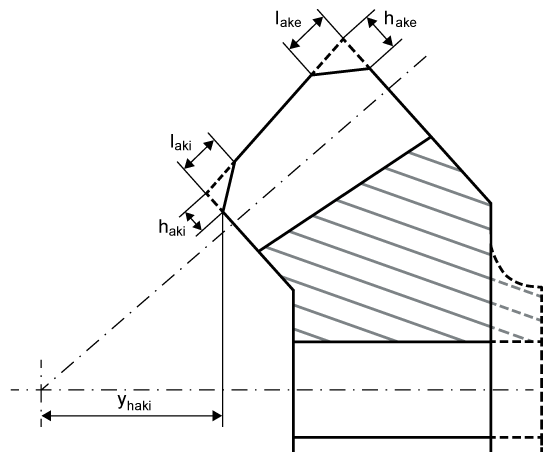
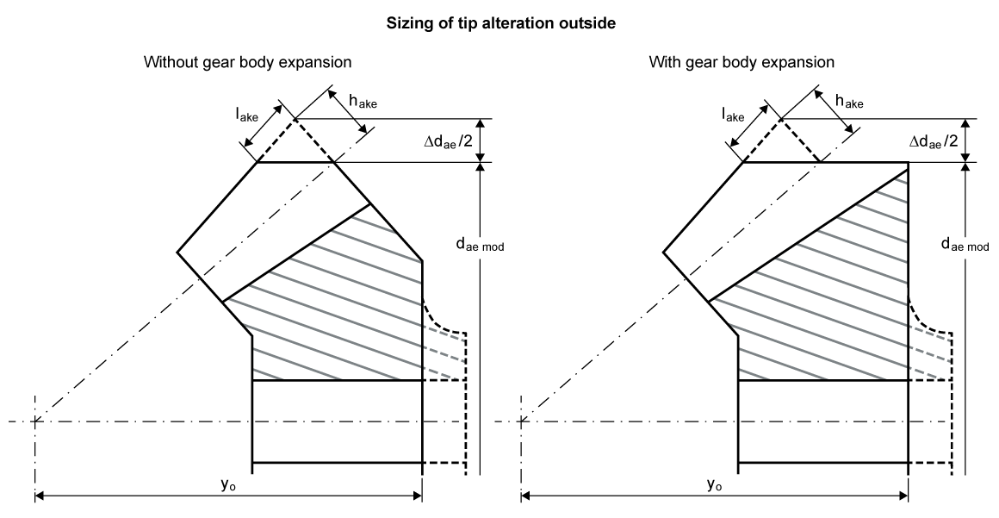
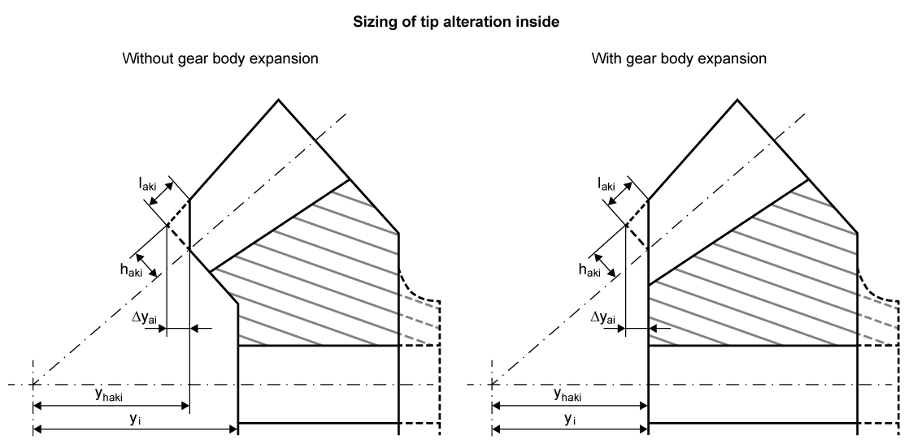

|
|
|


修改
选项卡用于定义齿廓和齿线修形、齿顶倒角或齿顶倒圆角。
您可以在此处找到有关齿顶倒角以及齿廓和齿线修形的数据（见 修改 一章）。
出于技术制造方面的原因，并非所有可用于圆柱齿轮的修改都适用于锥齿轮。
在特殊情况下，齿顶修正用于锥齿轮，以确保达到足够的齿顶间隙。此处输入数据的定义如图所示（见图16.10）。

图16.10：锥齿轮的齿顶修改
使用内部端面的修缘尺寸按钮，生成恒定齿顶宽度的建议值，该宽度为 0.2*法向模数，对应长度 bk（修缘宽度），如 Klingelnberg 内部标准所规定。为此，需按 Klingelnberg KN 3028 进行计算。
齿轮体的长度和宽度值可以在内部和外部（对于 3D 视图）进行修改。然后，单击转换按钮以生成带平行轴支撑的修改。这将打开一个窗口，在其中可以使用外部端面的尺寸功能生成修改的最大可能高度 h_ake 的建议值，直至外部锥面长度直径。修改的最大可能长度 l_ake 被限制为半齿宽，以便在锥齿轮 3D 模型中，未改变的齿高仍保留在齿的中间位置。
选择 选项以生成齿轮体的特殊形式（见图16.11）。

图16.11：锥齿轮外部端面的齿轮体修改
也可以单击转换按钮，对内端面进行转换。这将打开一个窗口，在其中可以使用内端面的尺寸功能，生成修改的最大可能高度 h_aki 的建议值，直至内锥长度直径。
选择 选项以生成齿轮体的特殊形式（见图16.12）。此窗口中 的「尺寸」按钮计算 yai，使锥齿轮体按 Δyai=0 成形（见图16.12），左或右。

图16.12：锥齿轮内端面的齿轮体修改
Modifications
The tab is where you define the profile and flank line modifications, a tip chamfer or a tip rounding.
You will find data about the tip chamfer and also the profile and flank line modifications here (see chapter Modifications).
For technical manufacturing-related reasons, not all modifications that could be used for cylindrical gears are used for bevel gears.
Tip alterations are used for bevel gears, in special cases, to ensure sufficient tip clearance is achieved. The definition of the data to be input here is shown in the figure (see Figure 16.10).
Figure 16.10: Tip alterations for bevel gears
Use the tip alteration Sizing button for the internal face to generate a suggested value for a constant tip width with 0.2*normal module, corresponding to length bk (tip relief width), as specified in the Klingelnberg in-house standard. To do so, the calculation according to Klingelnberg KN 3028 is required.
The length and width values for the gear body can be modified on the inside and outside (for the 3D view). Then, click the conversion button to generate modifications with a parallel axis bearing. This then opens a window, in which you can use the sizing function for the external face to generate a proposed value for the maximum possible height of the modification, h_ake, up to the external cone length diameter. The maximum possible length of modification l_ake is limited to half the facewidth so that the unchanged tooth height remains in the tooth middle, in the 3D model of the bevel gear.
Select the "" option to generate special forms of the gear body(see Figure 16.11)
Figure 16.11: Gear body modification on the external face of the bevel gear
You can also click the conversion button to perform a conversion for the internal face. This then opens a window, in which you can use the sizing function for the internal face to generate a proposed value for the maximum possible height of the modification, h_aki, up to the internal cone length diameter.
Select the "" option to generate special forms of the gear body(see Figure 16.12). The Sizing button in this window for "" calculates yai in such a way that the bevel gear body is given a shape according to Δyai=0, (see Figure 16.12), left or right.
Figure 16.12: Gear body modification on the inside face of the bevel gear